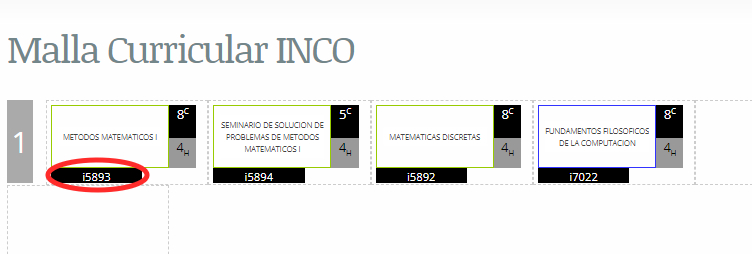
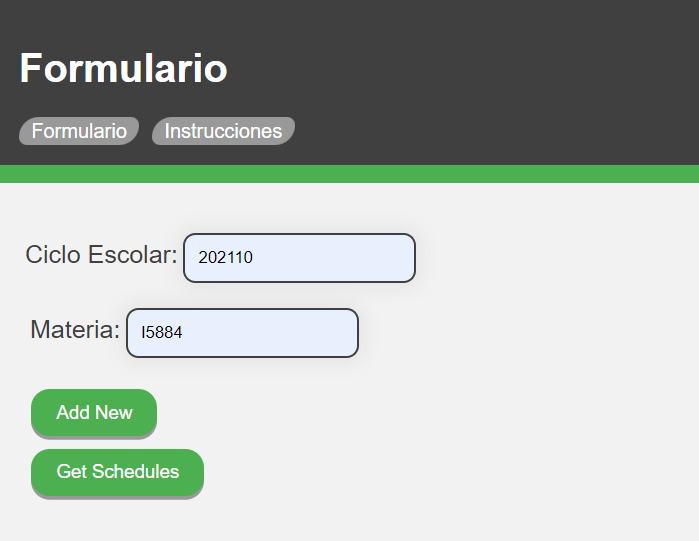
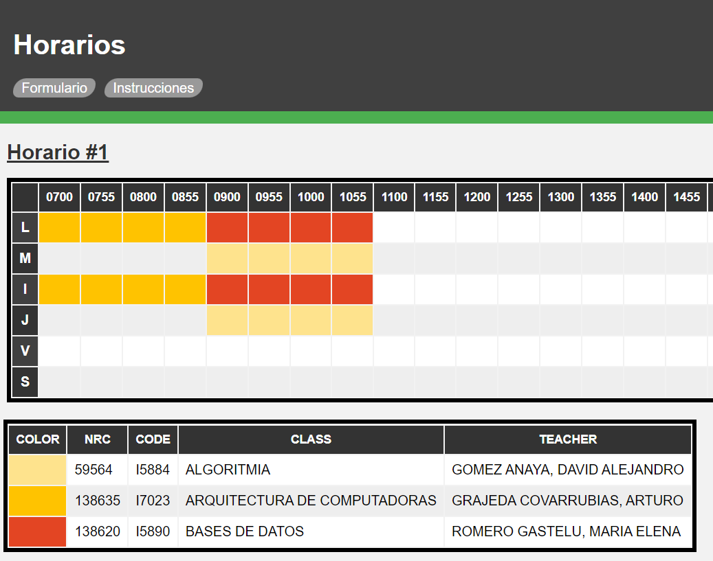

Revisa tu malla curricular y obten el código/clave de la materia que desees agendar. Se ha circulado de color rojo para marcar su ubicación. En caso de no tener disponible tu malla curricular, la información también es disponible en el sistema SIIAU bajo Registro -> Proyección.
Ya que tengas listo el listado de claves de las materias que desees agendar, deberás ingresar cada clave a un campo de Materia que se encuentra en el apartado de Formulario dentro de este sitio. Para ingresar el valor de Ciclo ingresa el año actual y tu ciclo. Asegurate de usar el formato 10 o 20 en lugar de A o B, respectivamente. Por ejemplo, si tu ciclo es 2021A entonces ingresa 202110. Una vez llenado el formulario, presione el botón Get Schedule para generar sus horarios.
Se le mostrarán varios horarios generados. Cada uno de estos horarios tendrá una tabla de información en la cual se podrá apreciar el nombre de la materia, el profesor que imparte la clase, la clave de la materia el color que representa en la tabla del horario y el NRC de la clase. Revisa todos los horarios generados y elige el que más te agrade.
Dentro de SIIAU Registro->Registro sólo copia los NRC del horario que más te agradó a los campos disponibles y presiona el botón de aceptar.